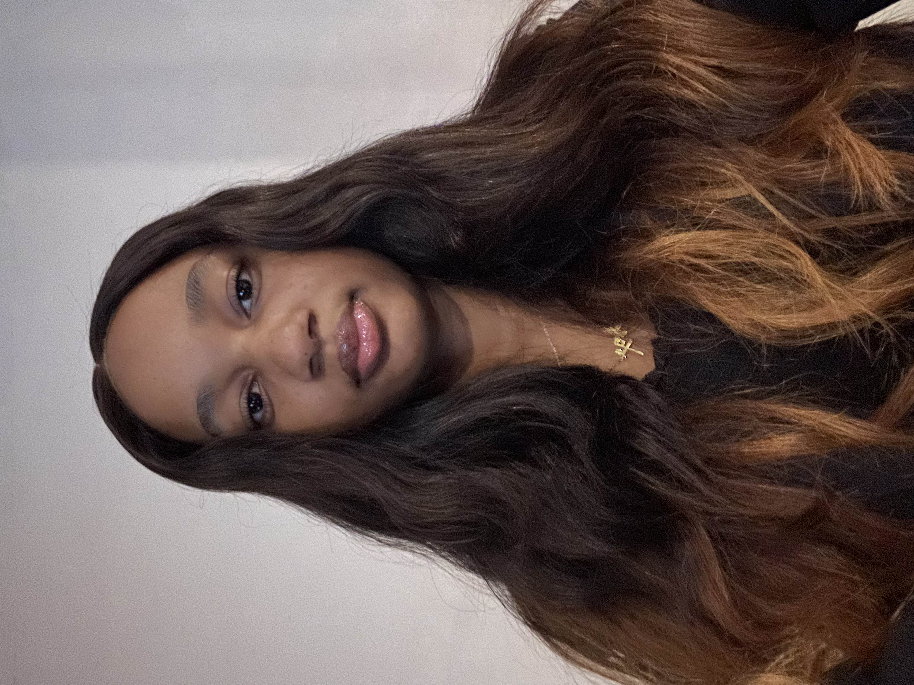

SOCHUM
Committee Overview
DPSIMUN 2026 introduces the Social, Humanitarian and Cultural Committee, the voice for human rights and dignity! With displacement, discrimination, and social justice on the line, delegates will speak for the people caught in the middle.
Established in 1945, SOCHUM is the Third Committee of the UN General Assembly. Its primary mandate is to address global human rights violations, social development, and humanitarian affairs. The committee discusses advancement of women, protection of children, indigenous issues, treatment of refugees, and fundamental freedoms.
In accordance with "Radical Resilience: Engineering Stability in an Age of Volatility," SOCHUM invites delegates to design adaptive, inclusive systems that enhance long-term community resilience before, during, and after crises.
Topics:
- Strengthening Youth Resilience: Addressing the Social, Cultural, and Institutional Factors Influencing Mental Health in an Age of Global Uncertainty
- Building Resilient and Inclusive Societies by Combatting Racism, Xenophobia and Religious Intolerance
MEET THE CHAIRS
Emmanuela
"Hello, delegates! My name is Emmanuela, and I am delighted to welcome you to this year’s DPSIMUN conference. It is a privilege to serve as one of your Chairs, and I look forward to meeting you all and hearing the ideas and perspectives you bring to committee. As we prepare for the conference, I encourage you to approach every debate with confidence, curiosity, and an open mind. MUN is about more than representing your country; it is an opportunity to negotiate, collaborate, and learn from one another. I hope this conference will be both engaging and enjoyable, giving you the opportunity to challenge yourselves, make new connections, and create lasting memories. Best of luck with your preparation, delegates, and I’ll see you at conference!"

Seyram
"Dear delegates, It is my pleasure to welcome you to SOCHUM. As your Chair, I am very excited to see how you participate in the debate, question perspectives, and work together in trying to find solutions to some of the most urgent social and humanitarian concerns of our times. It is important for you to enter this committee with an open mind and confidence. This conference is an occasion for you not only to develop yourself as a delegate but also as a person. I look forward to meeting you in the committee and seeing the ideas you will present there."

Xara Kilba
"I'm Xara and I'm delighted to be one of your SOCHUM chairs at DPSIMUN '26! This is my first time being a chair and I hope to play a role in an enjoyable and diplomatic conference. I believe MUN is not meant to be three days of straight talking but MUN is an opportunity to step out of your comfort zone and meet new people. I strongly urge all of you to seize this opportunity as you could build strong, potentially rewarding relationships. I hope to have an unforgettable three days full of fruitful debate and parliamentary fun!"
